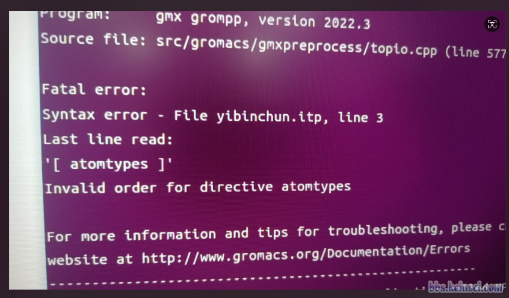
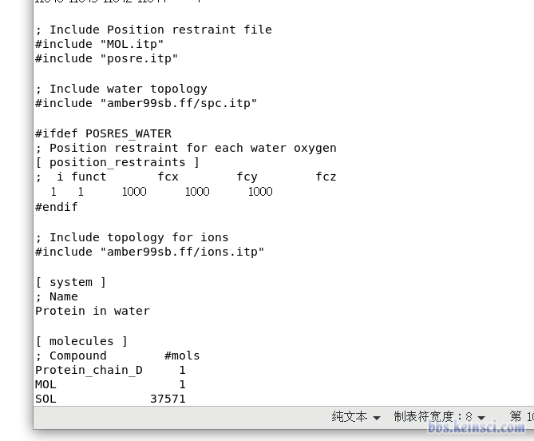
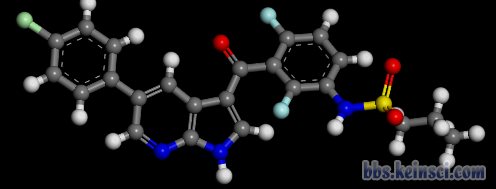
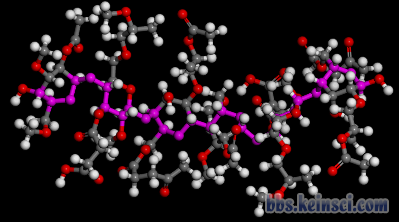
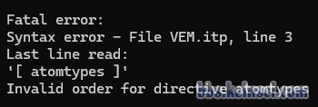

现在问GROMACS用grompp时出现Invalid order for directive atomtypes的报错现在在计算化学公社论坛里、思想家公社QQ群里简直成了周经甚至半周经问题，我都在论坛里、群里回复过无数遍。以后再有问这个的，我一律直接合并到本帖里，并且不再重复回复。下面我说得明白得没法更明白，我没有任何可补充的。
为什么出现这种报错、怎么解决，在我讲的北京科音分子动力学与GROMACS培训班（http://www.keinsci.com/KGMX）的下面这页幻灯片里已经体现得没法更清楚。自己仔细检查top中和其中各个被include的itp文件（以及被include的文件中include的文件），确保top中所有被include的文件（以及被include的文件中所include的各种文件）全被展开后，grompp最终看到的拓扑文件里字段顺序正确，即满足下面幻灯片里展示的顺序就完了。显然当前顺序若不合理就必须自己调整字段。一定要搞清楚拓扑文件里#include这种预处理指令是什么！这用来把一个文件里的全部内容插入到另一个文件里。
始终要牢记，grompp最终看到的拓扑文件的内容是所有被include的文件都完全展开后的！而不管有哪些itp文件！别再问某某某itp文件怎么样怎么样、无某某某itp文件这种问题，根本毫无意义。并且，不要问诸如 “我按照这个帖子处理了还不行” 这种问题，grompp出那种报错只可能字段顺序不对，没有任何其它可能，严格按我说的处理完了之后就必然没那个报错了。
directive_order.png (89.08 KB, 下载次数 Times of downloads: 252)
下载附件 Download
2024-5-21 02:30 上传 Uploaded
如果你对gromacs的拓扑文件缺乏了解、始终稀里糊涂搞不明白，以及在GROMACS是初学者阶段，强烈建议参加上述培训班完整、系统性学一遍GROMACS，就一次性全都彻底明白了，节约巨量自己来来回回绕弯路、摸索上花费的宝贵时间！（往届培训资料可以随时购买，见以上培训介绍链接）
topol.top
(2.12 KB, 下载次数 Times of downloads: 52)
2024-6-18 17:44 上传 Uploaded
点击下载
Click to download
yibinchun.itp
(8.71 KB, 下载次数 Times of downloads: 29)
2024-6-18 17:44 上传 Uploaded
点击下载
Click to download
202406181746133525..png (566.11 KB, 下载次数 Times of downloads: 221)
下载附件 Download
出错的界面
2024-6-18 17:46 上传 Uploaded
请问老师，这个是怎么处理呢
很常见的报错，看这个http://bbs.keinsci.com/thread-14401-1-1.html
各位老师好，我按照论坛首页的蛋白-配体分子分子动力学模拟流程进行，我的topol.top文件是这样的，MOL.itp是我用sobtop产生的配体分子的itp文件，posre.itp是gmx pdb2gmx指令生成的蛋白质限制势itp文件。配体分子的限制势我用gmx genrestr指令产生为posre_mol.itp文件，之后按照流程在MOL.itp文件的末尾进行了相关语句添加，如下图。
选区_007.png (46.09 KB, 下载次数 Times of downloads: 190)
下载附件 Download
2024-6-30 20:03 上传 Uploaded
_______013.png (87.42 KB, 下载次数 Times of downloads: 204)
下载附件 Download
2024-6-30 20:06 上传 Uploaded
但是在我之后进行gmx grompp -f ions.mdp -c solv.gro -o ions.tpr -p topol.top -maxwarn 1后，提示这样的错误，如下图
user@localhost_-data-sob-DPP4_006.png (63.76 KB, 下载次数 Times of downloads: 213)
下载附件 Download
2024-6-30 20:08 上传 Uploaded
想问一下老师们，我是哪一步出错了？
本帖最后由 student0618 于 2024-6-30 20:21 编辑
http://bbs.keinsci.com/thread-45783-1-1.html
Try to use the search function of this forum, this is a frequently asked question.
student0618 发表于 2024-6-30 20:18
http://bbs.keinsci.com/thread-45783-1-1.html
Try to use the search function of this forum, this i ...
好的，谢谢老师
本帖最后由 dandanhu 于 2024-8-21 20:12 编辑
各位老师，我想通过gromacs计算有机物小分子与聚合物的分子动力学，这两个分子（结构如下）的拓扑文件都通过Sobtop获得（由于聚合度较小，这两个分子都按照Sob老师给出的 例2 ，基于GAFF力场获得）。
202408211956203261..png (42.73 KB, 下载次数 Times of downloads: 180)
下载附件 Download
2024-8-21 19:56 上传 Uploaded
202408211957548061..png (71.64 KB, 下载次数 Times of downloads: 183)
下载附件 Download
2024-8-21 19:57 上传 Uploaded
在建好盒子，溶剂化后，体系不带电荷未添加离子，直接进行能量最小化，运行 gmx grompp -f minim.mdp -c solv.gro -p topol.top -o em.tpr 命令报错
202408211959324651..png (11.35 KB, 下载次数 Times of downloads: 213)
下载附件 Download
2024-8-21 19:59 上传 Uploaded
不知道是topol.top文件问题还是分子的itp文件的问题，烦请各位老师指教！
附上topol.top文件与itp文件
topol.top文件：
[ defaults ]
; nbfunc comb-rule gen-pairs fudgeLJ fudgeQQ
1 2 yes 0.5 0.8333
#include "HPMCAS.itp"
#include "VEM.itp"
; Include water topology
#include "spc.itp"
[ system ]
HPMCAS in water
[ molecules ]
; Molecule nmols
HPMCAS 4
VEM 6
SOL 32385
itp文件：
VEM.itp
(25.69 KB, 下载次数 Times of downloads: 33)
2024-8-21 20:08 上传 Uploaded
点击下载
Click to download
有机物itp文件
HPMCAS.itp
(232.01 KB, 下载次数 Times of downloads: 24)
2024-8-21 20:09 上传 Uploaded
点击下载
Click to download
聚合物itp文件
VEM.itp的[atomtypes]出现在了HPMCAS.itp的[molecular type]之后
把两个文件的[atomtypes]字段合并后，放在topol.top文件中的[default]字段下面
看http://bbs.keinsci.com/thread-45783-1-1.html
本帖最后由 student0618 于 2024-10-4 20:29 编辑
建议将这帖置顶或放推荐主题。
各位老师，请问在对NaCl溶液进行能量最小化时，离子选用KBFF力场（https://kbff.chem.k-state.edu/），水分子选用oplsaa.ff力场，建立tpr文件时报错。top文件和报错信息如下所示。
您好，我按照官网教程（蛋白配体复合物教程）模拟我自己的复合物，我使用的是amber99力场，sobtop生成了配体小分子的top、itp、gro文件，但是在添加离子那一步，输入命令gmx grompp -f ions.mdp -c solv.gro -p topol.top -o ions.tpr。就会报错
Fatal error:Syntax error - File topol.top, line 26
Last line read:
'[ atomtypes ]'
Invalid order for directive atomtypes
我又将拓扑文件进行修改，把
; Include ligand topology
#include "XAN1_fix.itp"两行，放到了
; Include forcefield parameters
#include "amber99.ff/forcefield.itp"下面，就会出现这个报错Fatal error:
There was 1 error in input file(s)。
想请问老师，这改如何解决，我找寻了好几天，仍被困在这里。
虽然这个问题搜到了一些帖子，而且被sob老师亲切定义为周经问题，但还是很confused，请已经解决的朋友们帮忙解决一下吧。
我做蛋白-小分子复合物的MD的时候，发现用gmx grompp -f ions.mdp -c protein_solv.gro -p topol.top -o ions.tpr 生成离子的tpr文件时候
出现了Fatal error:
Syntax error - File unk.itp, line 3
Last line read:
'[ atomtypes ]'
Invalid order for directive atomtypes
的报错，
通过搜索帖子，有的说是把小分子itp文件里的[ atomtypes ]字段复制到top文件里的itp（前或者后，不确定，有人说前有人说后，都试过了），但还是出错。
参考sob老师提供的PPT截图，atomtypes在moleculetypes，小分子itp文件生成的参数顺序也没错。
所以，请教一下，这个周经问题到底如何解决呢？我的itp和top文件相关字段截图如下，谢谢！
我前面都使劲强调了，别管什么文件，只管所有被include的文件全都展开后都有什么字段，这么简单的事怎么就不理解呢！？
复制到top文件里的itp（前或者后
还在问itp文件前、后这种事，根本毫无意义，根本没好好认真理解我的话
您好，我按照官网教程（蛋白配体复合物教程）模拟我自己的复合物，我使用的是amber99力场，sobtop生成了配体小分子的top、itp、gro文件，但是在添加离子那一步，输入命令gmx grompp -f ions.mdp -c solv.gro -p topol.top -o ions.tpr。就会报错
Fatal error:Syntax error - File XAN1_fix.itp, line 8
Last line read:
'[ atomtypes ]'
Invalid order for directive atomtypes。
我将拓扑文件进行修改，把; Include ligand topology #include "XAN1_fix.itp"两行，放到了; Include forcefield parameters #include "amber99.ff/forcefield.itp"下面，就会出现这个报错
Fatal error:
There was 1 error in input file(s)。
想请问老师，这该如何解决，我找寻了好几天，仍被困在这里。
本帖最后由 pkuchemistry 于 2024-12-13 13:13 编辑
sobereva 发表于 2024-12-13 12:25
我前面都使劲强调了，别管什么文件，只管所有被include的文件全都展开后都有什么字段，这么简单的事怎么就 ...
sob老师不要着急，错误的提示是unk.tpr中的问题，我展开了unk.tpr文件，发现atomtypes是在moleculetypes之前的，如图，这应该可以的吧？
pkuchemistry 发表于 2024-12-13 12:52
sob老师不要着急，错误的提示是unk.tpr中的问题，我展开了unk.tpr文件，发现atomtypes是在moleculetypes ...
连itp和tpr都分不清
第一句话不是你该说的
暖身贴 发表于 2024-12-13 12:51
您好，我按照官网教程（蛋白配体复合物教程）模拟我自己的复合物，我使用的是amber99力场，sobtop生成了配 ...
以后别再问这种问题，1L已我说得明确得没法更明确
并且别管那叫官网教程，根本就不是官网，看http://bbs.keinsci.com/thread-48043-1-1.html
sobereva 发表于 2024-12-13 14:50
以后别再问这种问题，1L已我说得明确得没法更明确
并且别管那叫官网教程，根本就不是官网，看http://b ...
感谢老师的回复，我接触这一块没多久，想请问老师，方不方便分享一下您说的1L，学生在哪可以找到，我非常想学习
暖身贴 发表于 2024-12-16 11:04
感谢老师的回复，我接触这一块没多久，想请问老师，方不方便分享一下您说的1L，学生在哪可以找到，我非常 ...
在右上角或者右下角有选择帖子显示页码的按钮，点1回到第一页看最顶上右边标1#的楼层不就是1L了……
原来你的问题单独发了一帖，但因为这个问题过于常见而被合并到答疑专帖了，现在1楼的楼主就是社长，解决方法也说得很明确了。
Uus/pMeC6H4-/キ 发表于 2024-12-16 11:25
在右上角或者右下角有选择帖子显示页码的按钮，点1回到第一页看最顶上右边标1#的楼层不就是1L了……
...
是的是的，非常感谢您
各位老师好，我想模拟碳纳米管和一种叫做PFO的聚合物分子在甲苯中发生相互作用的分子动力学，PFO的聚合度为3，我尝试按照这篇帖子中的方法http://bbs.keinsci.com/thread-19761-1-1.html，把toluene.itp文件内的[atomtypes]内容剪切到了PFO3.itp中，但是依然报错，请问应该如何修改itp文件呢？
第一步：
gmx editconf -f CNT86.10.gro -o CNT_box.gro -d 1 ;构建盒子
第二步：gmx insert-molecules -f CNT_box.gro -ci PFO3.gro -o CNTPFO.gro -nmol 3 ;向盒子中插入3个PFO3，输出命名为CNTPFO.gro
第三步：gmx insert-molecules -f CNTPFO.gro -ci toluene.gro -o CNTPFO_toluene.gro -nmol 600 ;向CNTPFO.gro盒子中插入600个toluene分子，输出命名为CNTPFO_toluene.gro
第四步：修改top文件#include "amber99sb-ildn.ff/forcefield.itp"#include "CNT86.10.itp"#include "PFO3.itp"#include "toluene.itp"
[ system ]CNT86.10 and PFO in toluene
[ molecules ]CNT86.10 1PFO3 3toluene 600
所有itp的[atomtypes]都剪到top的[ defaults ]后面并且重复的删掉应该就不报错了，itp都是sobtop生成的话不需要amber99的文件
不过首先这PFO结构不对吧。。
本帖最后由 NGC626 于 2024-12-17 16:52 编辑
et2ac 发表于 2024-12-17 00:36
所有itp的[atomtypes]都剪到top的[ defaults ]后面并且重复的删掉应该就不报错了，itp都是sobtop生成的话不 ...
谢谢老师，我是将聚合物的单体做优化后，直接在gview里复制粘贴的，请问在插入盒子之前还需要再对聚合物做一次优化吗？
NGC626 发表于 2024-12-17 16:50
谢谢老师，我是将聚合物的单体做优化后，直接在gview里复制粘贴的，请问在插入盒子之前还需要再对聚合物 ...
我意思是你这根本不是PFO，你再查查PFO长啥样
本帖最后由 NGC626 于 2024-12-17 17:34 编辑
et2ac 发表于 2024-12-17 17:00
我意思是你这根本不是PFO，你再查查PFO长啥样
老师您好，这是我之前查到的文献中PFO的结构，之后我在PubChem数据库中下载了单体的sdf文件https://pubchem.ncbi.nlm.nih.gov/compound/16213863
student0618 发表于 2024-6-30 20:18
http://bbs.keinsci.com/thread-45783-1-1.html
Try to use the search function of this forum, this i ...
如何调整呢
Seyilaxa 发表于 2024-8-22 00:37
VEM.itp的[atomtypes]出现在了HPMCAS.itp的[molecular type]之后
把两个文件的[atomtypes]字段合并后，放 ...
老师问一下合并是
[ atomtypes ]
; name at.num mass charge ptype sigma (nm) epsilon (kJ/mol)
n4 7 14.006703 0.000000 A 3.249999E-01 7.112800E-01
c3 6 12.010736 0.000000 A 3.399670E-01 4.577296E-01
c 6 12.010736 0.000000 A 3.399670E-01 3.598240E-01
o 8 15.999405 0.000000 A 2.959922E-01 8.786400E-01
ca 6 12.010736 0.000000 A 3.399670E-01 3.598240E-01
oh 8 15.999405 0.000000 A 3.066473E-01 8.803136E-01
hx 1 1.007941 0.000000 A 1.959977E-01 6.568880E-02
hc 1 1.007941 0.000000 A 2.649533E-01 6.568880E-02
ha 1 1.007941 0.000000 A 2.599642E-01 6.276000E-02
ho 1 1.007941 0.000000 A 0.000000E+00 0.000000E+00
hn 1 1.007941 0.000000 A 1.069078E-01 6.568880E-02
n 7 14.006703 0.000000 A 3.249999E-01 7.112800E-01
h1 1 1.007941 0.000000 A 2.471353E-01 6.568880E-02
[ atomtypes ]
; name at.num mass charge ptype sigma (nm) epsilon (kJ/mol)
p5 15 30.973762 0.000000 A 3.741775E-01 8.368000E-01
;c3 6 12.010736 0.000000 A 3.399670E-01 4.577296E-01
;os 8 15.999405 0.000000 A 3.000012E-01 7.112800E-01
;o 8 15.999405 0.000000 A 2.959922E-01 8.786400E-01
c2 6 12.010736 0.000000 A 3.399670E-01 3.598240E-01
n2 7 14.006703 0.000000 A 3.249999E-01 7.112800E-01
n1 7 14.006703 0.000000 A 3.249999E-01 7.112800E-01
cc 6 12.010736 0.000000 A 3.399670E-01 3.598240E-01
;c 6 12.010736 0.000000 A 3.399670E-01 3.598240E-01
nc 7 14.006703 0.000000 A 3.249999E-01 7.112800E-01
na 7 14.006703 0.000000 A 3.249999E-01 7.112800E-01
UF_H 1 1.007941 0.000000 A 2.571134E-01 1.840960E-01
h5 1 1.007941 0.000000 A 2.421463E-01 6.276000E-02
h4 1 1.007941 0.000000 A 2.510553E-01 6.276000E-02
;h1 1 1.007941 0.000000 A 2.471353E-01 6.568880E-02
还是
[ atomtypes ]
; name at.num mass charge ptype sigma (nm) epsilon (kJ/mol)
n4 7 14.006703 0.000000 A 3.249999E-01 7.112800E-01
c3 6 12.010736 0.000000 A 3.399670E-01 4.577296E-01
c 6 12.010736 0.000000 A 3.399670E-01 3.598240E-01
o 8 15.999405 0.000000 A 2.959922E-01 8.786400E-01
ca 6 12.010736 0.000000 A 3.399670E-01 3.598240E-01
oh 8 15.999405 0.000000 A 3.066473E-01 8.803136E-01
hx 1 1.007941 0.000000 A 1.959977E-01 6.568880E-02
hc 1 1.007941 0.000000 A 2.649533E-01 6.568880E-02
ha 1 1.007941 0.000000 A 2.599642E-01 6.276000E-02
ho 1 1.007941 0.000000 A 0.000000E+00 0.000000E+00
hn 1 1.007941 0.000000 A 1.069078E-01 6.568880E-02
n 7 14.006703 0.000000 A 3.249999E-01 7.112800E-01
h1 1 1.007941 0.000000 A 2.471353E-01 6.568880E-02
p5 15 30.973762 0.000000 A 3.741775E-01 8.368000E-01
;c3 6 12.010736 0.000000 A 3.399670E-01 4.577296E-01
;os 8 15.999405 0.000000 A 3.000012E-01 7.112800E-01
;o 8 15.999405 0.000000 A 2.959922E-01 8.786400E-01
c2 6 12.010736 0.000000 A 3.399670E-01 3.598240E-01
n2 7 14.006703 0.000000 A 3.249999E-01 7.112800E-01
n1 7 14.006703 0.000000 A 3.249999E-01 7.112800E-01
cc 6 12.010736 0.000000 A 3.399670E-01 3.598240E-01
;c 6 12.010736 0.000000 A 3.399670E-01 3.598240E-01
nc 7 14.006703 0.000000 A 3.249999E-01 7.112800E-01
na 7 14.006703 0.000000 A 3.249999E-01 7.112800E-01
UF_H 1 1.007941 0.000000 A 2.571134E-01 1.840960E-01
h5 1 1.007941 0.000000 A 2.421463E-01 6.276000E-02
h4 1 1.007941 0.000000 A 2.510553E-01 6.276000E-02
;h1 1 1.007941 0.000000 A 2.471353E-01 6.568880E-02
这样的呢？
王肖索 发表于 2025-1-22 17:55
老师问一下合并是
[ atomtypes ]
; name at.num mass charge ptype sigma (nm) ...
都可以，把重复出现的行备注掉或者删掉就行
Seyilaxa 发表于 2025-1-22 21:02
都可以，把重复出现的行备注掉或者删掉就行
好的，谢谢解答





以上为本帖已下载的 5 个图片附件。